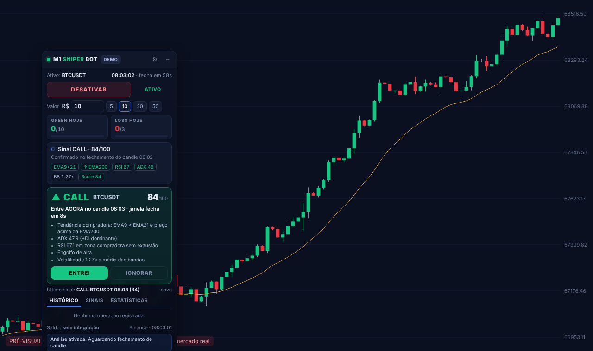

M1 SNIPER BOT
Extensão do Chrome com painel de análise M1 (EMA, RSI, ADX, Bollinger, Price Action), gestão de risco diária (10 GREEN / 3 LOSS, sem martingale) e execução 100% manual.
Abrir demonstração Código / download Relatório de validaçãoAviso: no backtest com dados reais (Binance, 14 e 30 dias, 6 pares) a estratégia acertou ~49%,
abaixo do break-even de 54,1% com payout de 85%. Não use em conta real. A demonstração usa dados sintéticos.
Instalar: baixe a pasta m1-sniper-bot, abra chrome://extensions, ligue o Modo do desenvolvedor,
clique em Carregar sem compactação e selecione a pasta. O painel aparece sobreposto em qualquer página que você abrir.
